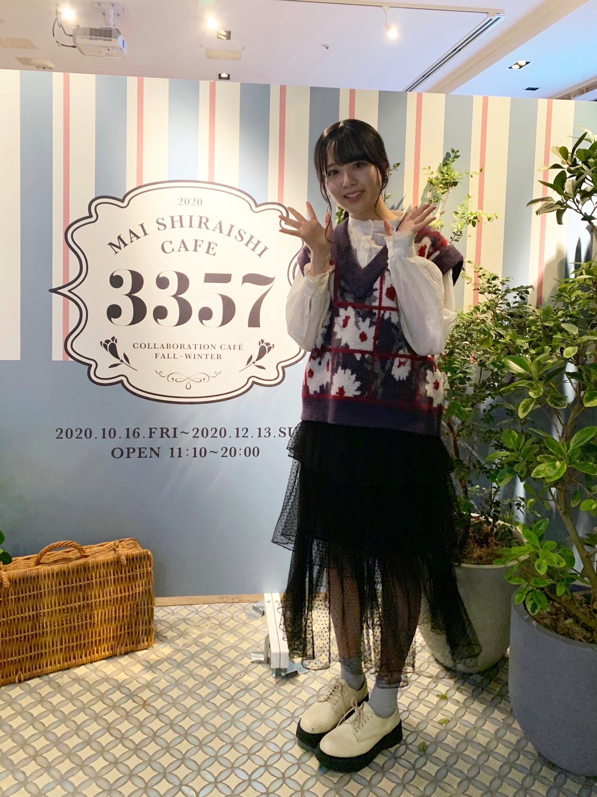

2020/1114Sat温かさ2倍。佐藤璃果
こんにちは~
乃木坂46 (新)4期生 岩手県出身
佐藤璃果です


白石麻衣さんのコラボカフェに
行かせて頂きました！⸜( •⌄• )⸝
何故かフラッシュがたかれてしまいました。
私はこちらのカフェラテを頂きました。
皆さんも是非！行ってみてくださいね
行った方は何を食べたのかとか感想を
書いてくださると嬉しいです。
私このカフェラテを飲むまで、
1日カフェインを摂取していなかったので、
余計に美味しく感じました。
上に乗っているホイップクリームのクリーミーさがとても相性が良くて美味しかったです。
☺︎

向かい側はカレーを
食べるさくちゃんでした。
沢山写真撮っちゃいました₍ᐢ.ˬ.ᐢ₎
沢山お話出来て嬉しかったです。
緊張して質問攻めしてしまったけれど
色々知れて嬉しかったです。
お話出来て幸せでした~
カレー好きな共通点発見です。
カレーを美味しそうに食べていました。
写真を撮る時だけ透明な
カバーをピラッとさせて頂きました。
そして！

あやめんとマネージャーさんに
撮って貰ったのです！
｢おはようでやんす｣と言ってくる
あやめん可愛いです~❅*॰ॱ
~~~~~~~~~~~~~~~~~~~
そして、11月12日、｢のぎおび｣
ありがとうございました。
次は緊張しないで出来るといいなぁあ。
皆さんとコミュニケーションが取れて
とてもとても嬉しかったです。
高山さんからの宿題も嬉しかったです。
いつか高山さんに、私に似合う髪型を教えて欲しいです( ˊ꒳ˋ ) ᐝ
桃子さんは麦茶が好きなんですね！
素敵だぁ、
~~~~~~~~~~~~~~~~~~~
11月10日、阪口珠美さん
❁お誕生日おめでとうございます❁
オシャレで立ち姿から綺麗な珠美さん！
ダンスもしなやかで綺麗で...素敵です。
この間、撮影の際に、その衣装可愛い~！
とサラッとお話して下さったことが
とてもとても嬉しかったです︎︎︎︎︎☺︎
たまたま、私と珠美さんと久保さんで
少し同じになった時に、
同い年だもんね！と話してくださって...
珠美さんが私を同い年だと認識してくださっていた事が嬉しかったです！
これからお話出来たら嬉しいです！
素敵な一年になりますように。
~~~質問~~~
〇乾燥肌に悩んでいるけど、良い対策はあるかな？
一緒にパック返ししましょー
〇ベロアと言えば額縁衣装ですが（？）、璃果ちゃんは着てみたい衣装ってありますか？
確かに！！
期待衣装たくさんあるなぁ、、、
額縁衣装も憧れですきです。
〇最近ハマってる飲み物とかはありますか？？
相変わらずコーヒーと
レモン水です。
〇らじらーに出る時に意識してやったこととかある？？
声を小さくならないようにすることと、
表情が見えないので、明るい声をより意識
受け身にならない
などなど色々です。
聞いてくださってありがとうございます。
まだまだ課題が沢山です...
〇年越しの瞬間ってなにしてるの？
普段なかなか会えない他校のお友達と
一緒に神社に行くの！
初詣！
〇好きなパンはありますか？
デニッシュ、
タルト、キッシュ(パンでは無いかも、、)
塩パン、、、、、、etc
〇昨日のらじらーすごく話すの上手いなぁって思ってんですけどお喋りは好きですか？
全然上手くないですよ！
でも今まで上手く話せなくて後悔ばかりだったので少しでもそう思って頂けたら幸いです。
好きです。
〇褒める時のコツはなんですか？
この人いい人素敵な人って
思うこと
〇璃果ちゃんは癖っ毛？元からまっすぐ？？
まっすぐです！
〇質問！俺も東北出身なんだけどいつか握手会が始まったら東北弁で話しかけてもいい？笑
話してけらい~！
〇りかちゃん的に初めましての人とかと楽しくお話できるコツとかありますか？？
私は、食の話しがちです。
あとは、地元のお話をお互いにします！
~~~~~~~~~~~~~~~~~~~
明日はるなぴです。
るなぴは偉いよ~~
~~~~~~~~~~~~~~~~~~
皆さんにとって
素敵な1日になりますように。

またね。
好きな卵料理はなんですか？
私はゆで卵＋塩
#41 りか
コメント(282)
のぎおび面白かったです
カフェ行ったんだね！！僕のところからなかなか遠くて行けないんだよなぁ。行ってみたいなぁ。
先日ののぎおびもお疲れ様！とっても楽しかったよー
カフェ行ったのね〜
可愛い4期ちゃんたちでいいな〜
一緒に行きたかった〜
今日も世界で1番璃果ちゃんが可愛い♡♡♡♡♡♡♡♡♡♡♡♡まいやんのカフェに行ったんだね♡♡♡♡♡♡♡♡♡♡♡♡♡僕もまいやんのカフェ行ったよ♡♡♡♡♡♡♡♡♡♡♡♡♡♡♡♡♡♡璃果ちゃんに会えなくてシュンです(´・ω・｀)
早く璃果ちゃんに会いたいよ♡♡♡♡♡♡♡♡璃果ちゃんの握手会まだかな♡♡♡♡♡♡♡♡♡♡♡♡早く璃果ちゃんに会って色んなこと話したいな♡♡♡♡♡♡♡♡♡♡♡♡♡♡♡♡♡♡♡♡♡♡またブログ更新楽しみにしてるね♡♡♡♡♡♡♡♡♡♡♡
またね♡♡♡♡♡♡♡♡♡♡♡♡
のぎおびも見たよ〜！他のメンバーとのエピソード色々聞けてよかったな〜楽しい30分でした！次も楽しみにしてるね〜！！
璃果ちゃんブログ更新ありがとう〜！
白石さんのコラボカフェ行ってみたいんやけど、関西に住んでるから行けなさそうやなぁ。璃果ちゃんのブログの写真みて楽しませて貰います〜笑
のぎおびお疲れ様〜
のぎおび始まる直前に知ったからめっちゃ焦ったんやけど、30分璃果ちゃんに癒して貰えました。ありがとうございますm(_ _)m
個人的にポニーテールを見れたのは嬉しかったんで、次はお団子とかして欲しいな〜
卵って色んな料理にもできるし万能やから逆に1番決めるの難しかったりするよね(--;)
自分はなんだかんだゆで卵が1番卵の味が感じられて好きかな〜
璃果ちゃんはゆで卵食べる時ってマヨネーズと食べる？それとも塩と食べる？？自分はたぶん塩なんやけど笑
んじゃ11月も半分すぎそうやけど、こっからまた頑張っていこー
質問、先日おはつちゃんの後、れなちさんと
お話しをして、ご飯食べに行ったのを
ラジオで聞きました。感想お願いします。
のぎおび面白かったです♪
好きな卵料理はオムライスです。
さっきのコメント送った後に気づいたんやけど璃果ちゃんゆで卵に塩がおすすめって言ってくれてたやん。ってなりました笑
ゆで卵の他におすすめするならチャーハンに入ってるふわふわな卵とか美味しいかな〜
んじゃこっからまた頑張っていこー
まいやんのカフェ、4期生でいったのー？？
オーディションで気をつけたことは？
かがやきです。
璃果ちゃんブログ更新ありがとう〜
今日も可愛いです！
最近は、焼き芋を見るたびに璃果ちゃんを思い出すので、
紅はるかを意識して注文しています。
美味しいし、温まります。
(璃果ちゃんは冷やして食べるんですよね……)
璃果ちゃんの話し方、すごく好きです。
らじらーでも、丁寧なだけじゃなくて、
吉村さんにつっこんだり、テンションの高いところも聴けました。
すごくすごく嬉しかったです。
今日の質問の褒めるコツ、がすごく素敵だなって思いました。
僕も、璃果ちゃんのことは、思い込みじゃなくて
心から素敵な人だと思っていますので、
いっぱい褒めるところが思いつくんだなーと思っています。
素敵ですね。
luna seaの「crazy about you」とても良い曲なので聴いてみてください
まいやんのコラボカフェに行かれたんですね〜
やっぱり、璃果ちゃんも乃木坂46なので、雰囲気にすごく似合います
さくらちゃんも可愛いです……
今日と明日で、25枚目のイベントは一旦おしまい。
26枚目が始まるようです。
次こそは…璃果ちゃんとお話できる機会が来るのでしょうか。
どうでしょうか……
璃果ちゃん気になってる友達と密かに盛り上がってますからね
会いに行ってもいいですか？
今週は、僕も芋ぐるめを探しに川越に行きたいなと思います。
それではーーーまた。
かがやき
まいやんのコラボカフェ行ったんだー、いいなぁ。
行きたいんだけどね、やってる地域決まってるからなかなか行けないんだよね笑
ハンバーグプレート食べてみたいんよなぁ。
さくちゃんとかと一緒に行ってたんだね。
さっきさくちゃんからもモバメでまいやんのカフェ行きましたーってきたよ〜。カレーと一緒に写真撮ってた。
逆に質問攻めできるのすごいよ、あんま慣れてない人とご飯行ったら何喋ろうって考えて終わっちゃうもん笑
あやめちゃんまだjkだから色んな言葉使うよね笑
僕はもうついていけない笑
やんすとか言ってる人周りにいないもん笑
でもそこがかわいいよね、あやめちゃん笑
のぎおびも見ましたよ！
帰ってる途中だったからバスに乗りながらと歩きながら見てたけど、すごい楽しかったよ！
璃果ちゃんが話してるの聞くと落ち着くんよね。
またやってくれるの楽しみにしとくね。
好きな卵料理は王道に卵焼きです。甘いのもしょっぱいのもどっちも好きです。結構作るの上手いですよ、僕。笑
またブログ更新楽しみにしてます！
(=ﾟωﾟ)ﾉﾎﾅ､ﾏﾀ!!
りっちゃん！
やっほー！
ひろき(Yandji)です☺️
ブログ更新ありがとー！！！
質問タイムー！！！
4期生ライブの注目ポイントあったら教えて☺️
また、コメントするね！
では、またねー！
ひろき(Yandji)より
今日受験だったけど、りかちゃんのおかげで頑張れたよ！！ありがと！！！
YOSHIKI
俺もゆで卵塩派
時々マヨネーズかけるけど
まいやんかふぇ行ったんですね！！
璃果ちゃんが美味しそうだなぁと思ったメニューはありますか??
EX大衆さんのアンコールグラビア見ました( ᷇࿀ ᷆ )
未公開カットも可愛すぎました！！！
質問です(๑• •๑)♡
◎さつまいもの焼き芋以外に美味しい食べ方ありますか??
◎生写真撮影はたくさんの衣装を着れるから楽しいですか??
◎璃果ちゃんがパフォーマンスしてみたい曲はなんですか??
◎4期生ライブ緊張と楽しみどちらの気持ちが大きいですか??
いつも幸せありがとう！！
まなより
楽しかったんだね^^
そのお洋服のぎおびの日かな！？
とっても楽しそうでよかったです(⸝⸝•ᴗ•⸝⸝)♡
あやめんとのツーショかわいい♪
のぎおびも最初からちゃんと見れてよかったっ ̫ -˘♡
かわいかったー！ハーフツインもツインもポニテも色んな髪型の
りかちゃんが見れて幸せでした！
好きな卵料理はスクランブルエッグですo(o|o)/
5日後の更新楽しみにしてるね⸜( •ᴗ• )⸝またね！だいすき！
まいやんカフェいいなぁ〜、なかなか空いてる日に予約が取れずにいます
行けたら是非カフェラテ頂きたいです
次の更新も楽しみにしてます、頑張ってね〜
まいやんカフェ羨ましい！岩手からやとちょっと遠いからなかなか行けなくて辛いんだよなぁ〜。でも見る限り料理も美味しそうで店内もオシャレとか行きたくなるんですけど！
次は是非一緒になんつって。
それは映えやな(？)
さくちゃんとあやめんと一緒だったの。何その空間。天国！？
沢山話せてよかったね！同い年だしね！
ｵ、ｵ、ｵｵ、、俺もカレー好きです(入ってくるな)
のぎおびよかったよ〜！
今日で19歳になりました。璃果ちゃんに追いつきました。
ブログの更新日に合わせて生まれてきました(そんなわけない)
だから私はだし巻き玉子(？)
この前はのぎおびお疲れ様ね。
たくさんの人が見てくれてよかったね！璃果ちゃんも楽しんでたみたいだったし、ほっこりした雰囲気が伝わってきて非常に良かったです笑
白石さんのカフェみんなで行ったんだね！楽しめました？？
グループの歴史を学びながら、4期生のみんなでコミュニケーション取って絆を深めてほしいです。
これからライブがあるからリハとかも大変だと思うけど、体調崩さないように気をつけてね！！
楽しみにしてます！
今日もありがとうね。
たーくん
のぎおび見ました〜！
乃木坂らしい髪下ろしてるのも似合ってて可愛いし、ハーフツインとか三つ編みも可愛かったです(;_;)
私の好きな卵料理はスクランブルエッグ＋ケチャップです。
朝ご飯に食べるのが1番好きです！
26thシングル発売決定おめでとうございます！！
直接握手会で話すのは難しいけれど、ミーグリで璃果ちゃんとお話できるのとっても楽しみにしてます。
今日も大好きです♡
高校卒業したら旅行行くんだけど、ワンチャン東北の方行くから岩手行きたいなぁって思ってるんだけど
岩手のおすすめの場所とか食べ物教えて欲しい！！
YOSHIKI
私はハンバーグプレートを食べました！！
お肉の感じが最高でした。
僕もまいやんさんのコラボカフェ行ったこと
ないので、行ってみたいです！
僕もカレーが好きなので、カレーの話をしてみたいー！4期生同士の写真がみれてよかったよー！
早くりかちゃんとお話をしてみたいなぁー！
絶対たのしんだろーなって思いましたー！
あ！体調はよくなりました！この前の前で
コメントしてるかもしれないけど。笑笑
どんどん寒くなってきてるんで、
体調崩さないようにまた、TVで、元気な顔を
見せてください！
それでは、ブログ更新まで待ってるね！
また、ばいにゃー。笑
今回の写真もかわゆいです
まいやんのコラボカフェは4期生メンバーで
行ったのかな？
のぎおび配信またやって欲しいな
そういえば日向のぱるや茉莉や未来虹ちゃんが
SHOWROOM配信するから時間があったら
見て連絡してあげたら
今日も一日お疲れ様でした
大好きだよ 璃果ちゃん
そんな璃果ちゃんも可愛いです( ⸝⸝⸝¯ ¯⸝⸝⸝ )♡
あとパック返しはananさんで言っていたやつですか!!??
私も実践してます( ¨̮ )
乾燥肌に悩んでたので璃果ちゃんに救われましたー！！！
まなより
まいやんカフェ行ったんだね！！あやめちゃんとのツーショット2人とも可愛い！！でやんす口癖ってあやめん言ってたね！！
璃果ちゃんのぎおび楽しかったよ！！今は会えない状況だけどのぎおびでコミュニケーションとれて良かった！！とても嬉しい時間でした！
質問〇璃果ちゃんは最近ハマった趣味とかある？？
〇璃果ちゃんも「でやんす」口癖ですか？？
〇さくちゃんに質問した時に印象に残った話題とかある？？
今日もブログ楽しく読ませてもらいました！！
璃果ちゃんにより良い日々になりますように！
璃果ちゃんありがとう！！
ゴードンでした！！
のぎおび楽しく見させてもらいました！
ファンの人達を楽しませよう！とかそういう気持ちが伝わってくる感じ、すごいりかちゃんらしくていいなって思いました(笑)
色んな髪型？とか見れて楽しかったです！
4期生の子たちと交流深まってるみたいでなんか嬉しく感じました…(´TωT｀)(笑)
りかちゃんも乃木坂の一員になったんだなぁって改めて感慨深く感じてますw
もうすぐ1年くらい経つって考えるとすごい早いね…ほんとに乃木坂になってくれて嬉しい限りだよ…！！！
質問
・踊ってみて大変だった曲とかありますか？
・家にこたつはありましたか〜？(東北だと出れなくなりそう)
・りかちゃんが今アイドルなんだなぁって感じる瞬間はありますか？
・これから仲良くなりたい！って思ってるメンバー(先輩とかも含め)はいますか？
・りかちゃんはアニメとか映画とか何か好きなキャラクターはいますか？
・のぎおび見てからのお願いなんですけど、これは高すぎる！って感じのツインテ見て見たいです…！！！
5日後をまた楽しみに待ってるね！
メリアより。
私はハンバーグプレートを食べました！！
お肉の感じが最高でした。
私、お隣秋田に住む野生動物です。最近璃果さんが私の中で急上昇なのです♪
ここで質問！岩手と言えば私の大好物である南部せんべいが名物…
さて璃果さんは南部せんべい食べたことありますか？ゴマとピーナッツどっちが好きですか？
コラボカフェ行きたいけど未だに行けず、、
いつか行ってみたいです！
のぎおび楽しかった！次回も楽しみです！
質問に来てるけどほんとに喋り方上手かったなぁ
26枚目の握手会楽しみ！
質問
〇りかちゃんが今イチオシの漫画とかある？
〇4期生ライブでやってみたいことは？
〇りかちゃんの好きな髪型は何？？
〇乃木坂に入って変わった事何かありますか？
次のブログ待ってます！またね！
りかちゃんが4期生みんなと仲良くなれて嬉しい！私はまだ行ってないけど、ブログみてカレーとカフェラテ食べること決定した！笑
質問
さくちゃんにどんな質問したの？笑笑
機会があれば、さくちゃんのたくさん撮った写真見せてほしいな！
いいなぁ自分もまいやんカフェ行きたいので予約して今度行きます！
カレー美味しそうだしさくちゃんもあやめちゃんも可愛いですね
もちろん璃果ちゃんが一番可愛いです
らじらーすごく可愛かったし藤森さんと吉村さんとの相性も良かったですねまた出て欲しいです！ 次回のブログ更新日をすごく楽しみにしてますね！
さくちゃんとあやめんの写真もありがとう〜
研修生ライブフル参戦したから、璃果ちゃんのパフォーマンスする四期生ライブ楽しみ！
コラボカフェ行ってるのめっちゃ楽しそう！さくちゃんとカレー食べてるのもあやめんと写真撮ってるのもすごくいい感じ！コラボカフェは大阪のやつ行く予定やから今日の写真見て余計に楽しみ☺︎カレー食べよかな笑
それとそのお洋服もめっちゃ似合っててかわいい！お花柄っていうのもあってお花みたいで素敵！
今週もありがとう！また来週も待ってます！
最近僕は本を読むのにハマってます！
もちろん璃果ちゃんと同じ仏教の本です！
すごく新鮮な気持ちになります
先週のノギスキ観ました！すごく面白かったよ！
璃果ちゃん回来るの楽しみにしてるよ！
質問コーナーお願いします
Q動物園と水族館どちらが好きですか？
Qまいやんカフェでのおすすめ商品ありますか？
Qサンタクロースっていると思いますか？
よかったらお答えお願いします
またコメントするね！またね
PS.裸足でななよだ(きょうすけ)
カフェに行けたか？良いね(*´ω｀*)
って、その前にりかちゃんの全身コーデを見れるよ＼(^o^)／
黒いレイヤードチュールに灰色の靴下と厚めの靴
・・・これはりかちゃんスタイルか？かなり予想外だ(ﾟдﾟ)！
でも可愛いよ、特に靴下(*´ω｀*)♡
恥ずかしかったらごめんね(｡>﹏<｡)
そしてさくちゃんの写真、めちゃ彼女とデートなう感じゃん？（笑）可愛い(*´ω｀*)♡
あやめんでやんす（笑）本当にあの子は（笑）
今度もたまみと他の子たちともっと距離縮めて仲良くなれたら嬉しいよ＼(^o^)／
これからも頑張って(/･ω･)/
ゆで卵+塩、それはいったい「料理」と言えるかな？（笑）
らじらー拝聴しました。
声のみだからこそ、佐藤さんがお持ちの柔らかく優しい雰囲気を感じる事ができ、佐藤さんは本当にお優しい方なんだと改めて感じました。
そして、とてもリアクションが良かったり、パーソナリティさんへの返しが面白かったりと佐藤さんの新たな一面を観る事ができてとても楽しかったです。
素敵な時間をありがとうございました。
実はらじらーをちゃんと聴くのは、はじめてでした。
東北弁は「んだ」や「めんこい」を使うんですね。
一度東北弁がっつりのブログ（標準語訳つき）とか読んでみたいなって思いました。
是非ご検討ください笑
これからますます寒くなると思いますが、体調にお気をつけくださいね。
また5日後楽しみにしています。
璃果ちゃんブログ更新ありがとう！！
璃果ちゃんもまいやんカフェ行けたんだね～！！
私も火曜日行ったんだ～！！
私はね、お友達とシェアみたいな感じでバターチキンカレーといちごのタルト食べたよ！
もう1回行く予定あるから今度は飲み物系攻めようかな～！笑
さくらちゃんと色んなお話もできたみたいで良かったね～！！
どんどん4期生同士仲良くなっていってるのすごい嬉しい～！！ライブも楽しみだぁ！！
シングル発売決定したね～！！
てことはさ、璃果ちゃんとついにお話できる機会ができたってことでいいのかな！！期待していいよね！！笑
多分ミーグリになるのかな～って思うけど、その時は絶対璃果ちゃんに画面越しだけど、会いに行くね！！！
ついに、推しメンタオルの出番かな～！！ほんとに楽しみ！！
もしさ、ミーグリとかでコメントしてたものです！っていったら分かるものなのかな～？？こういう時のためにもっと分かりやすいあだ名みたいなのでコメント投稿してればよかったと今更ながら後悔ですが、、、(笑)
でも！璃果ちゃんとやっとお話できそうって思ったら今もニヤニヤしちゃいます～☺︎ 楽しみ！！
のぎおびもお疲れ様でした～！！
なんか、新4期のなかでも璃果ちゃんのぎおびめちゃめちゃやってる気がするのは気のせい！？笑
なのに、毎回予定あって見れなくてほんとにショック～(;_;)
だから、のぎおびアフタートークでいつも我慢してます笑
今日ちょっと長くなってしまった、、！！
読みづらかったらごめんね～。。
またコメントするね！！
あや
自分は今、高専生なのですが璃果ちゃんも高専生だったと
聞いて勝手に親近感湧いてます！
質問
ロボコン知ってますか？ 自分たちのチームが全国大会に
出るので是非、youtubeでロボコン全国大会見てください！
コメントする

PROFILE
新4期生リレー
202104
| SUN | MON | TUE | WED | THU | FRI | SAT |
|---|---|---|---|---|---|---|
| 1 | 2 | 3 | ||||
| 4 | 5 | 6 | 7 | 8 | 9 | 10 |
| 11 | 12 | 13 | 14 | 15 | 16 | 17 |
| 18 | 19 | 20 | 21 | 22 | 23 | 24 |
| 25 | 26 | 27 | 28 | 29 | 30 | |

Showroom見たよ！
すごく可愛かった！！
26枚目シングル発売決定おめでとう！
どんな曲や選抜になるか楽しみ！
しぃなちゃんが入ってることを祈ってます！
ゆっちゃんより。